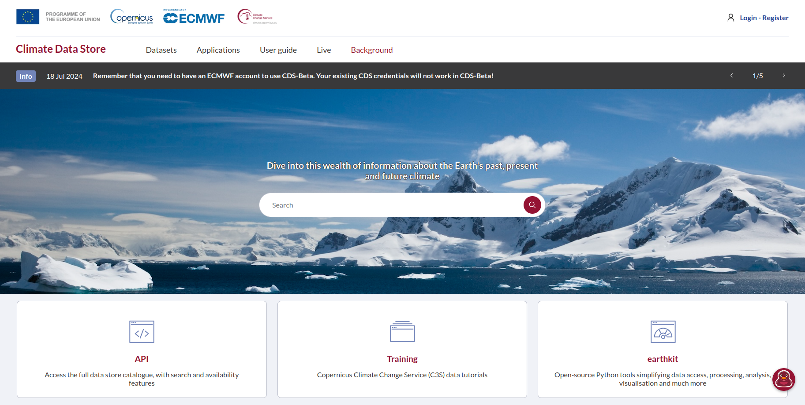

The Climate Data Store or any other data source#
In the previous chapters, we explored how data is generated and what types of data are related to drought events. Now, it is important to understand how we can access the data for our analyses.
The primary source for our data is the Climate Data Store, a comprehensive and free online platform provided by the European Centre for Medium-Range Weather Forecasts (ECMWF) on behalf of the Copernicus Climate Change Service (C3S).
The CDS is designed to offer access to a wide range of climate data and tools, making it a valuable resource for anyone interested in climate-related information.

Note
At the moment, the platform is undergoing updates, so some links might differ from those indicated here.
Data access#
The CDS provides access to a vast array of climate data, including historical weather observations, climate projections, reanalysis datasets, and seasonal forecasts. These datasets cover various temporal and spatial scales, from global to local levels. An account is required to access and interact with the platform.
Important
Here is the link to the registration page.
Variety of data#
The data available through CDS includes temperature, precipitation, wind, sea level pressure, and other essential climate variables. It also encompasses different types of data, such as satellite observations, in-situ measurements, and model outputs.
In particular, our data is derived from the ERA5 reanalysis model. ERA5 is a state-of-the-art global climate reanalysis produced by the European Centre for Medium-Range Weather Forecasts (ECMWF). It provides hourly estimates of a wide range of atmospheric, land, and oceanic climate variables, spanning from 1940 to the present.
All data and tools available on the CDS are free to use
Important
Here is the source to learn about and access our data: Drought indicators derived from ERA5 reanalysis.
Tip
Here you can find more information about all the types of dataset available on CDS.
Data tools#
Besides data access, the CDS offers various tools for data processing and analysis. You can create custom data extractions, visualize trends, and generate tailored reports based on your specific needs. There are two main ways to obtain the data: downloading it through a web interface or accessing it programmatically via the API. In our case, we will access the data via API.
Tip
Here you can find a useful explanation on how to use them depending on the operating system you are using: CDSAPI setup.
Support and documentation#
The CDS provides extensive documentation, tutorials, and user support to help you understand and effectively use the available data and tools.
Tip
You can find more at this link: Learning resources to facilitate use of datasets on the CDS, and also at this one: User guide